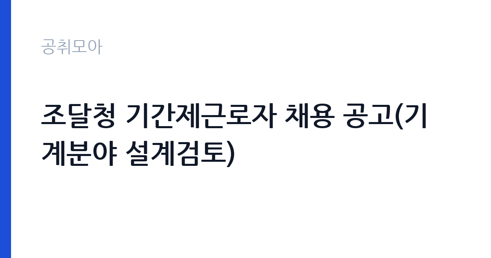

[국가기관] 조달청 기간제근로자 채용 공고(기계분야 설계검토)
조달청 · 대전 · 마감 2026-10-12 (D-14) · 출처 나라일터

한눈에 보는 모집 조건
| 기관 | 조달청 |
|---|---|
| 공고명 | 조달청 기간제근로자 채용 공고(기계분야 설계검토) |
| 고용형태 | 기간제 |
| 근무지 | 대전 |
| 게시일 | 2026-09-29 |
| 마감일 | 2026-10-12 (D-14) |
지원자격, 이렇게 읽으세요
- 기간제 근로자 1명
- 접수 ~2026-10-12 마감
- 세부 조건은 원문 공고문 확인
자격요건은 공고문을 직접 확인하셔야 하며, 기계분야 설계도서 검토가 가능한 전공과 경력이 요구될 가능성이 큽니다. 조달청 맞춤형서비스 업무는 공공 건축물의 기계설비 설계를 검토하는 전문 직무라 건축기계설비기사 등 관련 자격증과 설계·감리 경력이 평가 핵심이 됩니다. 기간제 채용에서 자주 발생하는 탈락 사유는 경력증명서 미비와 자격증 사본 누락입니다. 이메일 접수 시 제출 서류 도착 여부를 담당자에게 반드시 확인해야 하며, 이 확인 절차를 빼먹으면 접수가 무효가 될 수 있습니다.
이 공고의 포인트
이 공고의 매력은 조달청이라는 중앙관서 경력을 쌓을 수 있다는 점입니다. 시설공사 맞춤형서비스는 지자체와 공공기관이 발주하는 건축 공사를 조달청이 대신 관리해주는 제도로, 대형 공공 건축물의 설계도서를 들여다볼 수 있는 자리입니다. 기계설비 분야 실무자에게는 6개월간 공공 발주 프로세스를 익힐 수 있는 기회이며, 이후 건설기술 심의나 감리 분야로 경력을 확장하는 데 도움이 됩니다. 채용 기간이 명시된 한시 자리인 대신 전공 적합성이 맞으면 경쟁률이 낮은 편입니다.
전형은 어떻게 진행되나
조달청 공고 제2026-486호에 따른 공개경쟁 채용으로, 접수 기간은 9월 29일부터 10월 12일 오후 6시까지입니다. 응시 방법은 등기우편과 방문 접수, 이메일 접수가 모두 가능하며 이메일 접수자는 담당자에게 서류 도착을 반드시 확인해야 합니다. 서류전형과 면접시험으로 진행될 것으로 보이며 세부 전형은 공고문을 확인하십시오. 문의처는 조달청 시설사업기획과(042-724-7335)입니다. 접수 마감이 평일 저녁 6시이므로 마감일 접수는 위험합니다.
원문에서 확인한 전형 방식
조달청 기간제근로자 공개경쟁 채용시험 공고(조달청 공고 제2026-486호) 조달청에서는 붙임과 같이 기간제근로자를 신규채용하고자 하오니 유능한 인재의 많은 응모 바랍니다. - 모집분야 : 시설공사 맞춤형서비스 설계검토 업무 (기계 1명) - 고용형태 : 기간제근로자 - 자격요건 : 공고문 참조 - 접수기간 : 2026.9.29.(화) ~2026.10.12.(월) 18:00까지 - 채용기간 : 채용일로부터 2027.4.30까지 - 응시방법 : 등기우편 또는 방문접수, e-mail 접수(제출서류 도착여부를 담당자에게 반드시 확인) - 문의처 : 조달청 시설사업기획과 042-724-7335 기타 세부사항은 공고문을 참조하여 주시기 바랍니다.
이런 분께 추천해요
- 건축기계설비나 기계 전공자로 공공 발주 경험을 쌓고 싶은 분께 맞습니다. 설계도서 검토 실무가 핵심 업무입니다.
- 설계사무소나 감리 경력이 있어 중앙관서 근무 경력을 더하려는 분께 권합니다. 약 6개월의 집중 경력이 됩니다.
- 대전 근무가 가능한 기계분야 기술자격 보유자에게 유리합니다. 조달청 본청이 대전에 있어 출퇴근이 수월해야 합니다.
지원 전 체크리스트
- 기계분야 자격요건(전공·자격증·경력 연수)을 공고문에서 확인했습니다. 자격증 사본과 경력증명서를 미리 발급받아 두십시오.
- 채용 기간(채용일~2027년 4월 30일)을 확인하고 본인 일정과 맞는지 판단했습니다. 연장 가능 여부는 공고문과 담당자에게 확인하십시오.
- 접수 방법별 제출처와 마감 시각(10월 12일 18시)을 확인했습니다. 이메일 접수자는 담당자 확인까지 마쳐야 접수가 완료됩니다.
- 시설사업기획과 문의처(042-724-7335)를 저장했습니다. 서류 도착 확인과 자격요건 해석이 애매하면 접수 전에 문의하십시오.
모집 일정과 제출 타이밍
접수는 9월 29일부터 10월 12일까지 약 2주간입니다. 설계도서 검토 경력을 증빙하는 포트폴리오 성격의 서류를 준비하는 데 시간이 걸리므로 이번 주 안에 경력증명서 발급을 마치십시오. 마감일인 10월 12일은 월요일 저녁 6시 마감이라 주말에 발송하면 도착 확인이 어려울 수 있습니다. 늦어도 10월 9일까지는 접수와 도착 확인을 끝내는 일정으로 움직이시는 것이 안전합니다.
직무 이해하기: 국가기관
맞춤형서비스 설계검토 업무는 지자체 등이 의뢰한 공공 건축 공사의 설계도서가 기준에 맞는지 검토하고 보완 의견을 내는 일입니다. 기계분야는 냉난방과 환기, 급배수와 위생설비, 소화설비 도면의 적정성을 확인하는 업무가 중심입니다. 관련 법규와 설계 기준을 적용해 오류를 찾아내고 발주자와 설계자 사이에서 기술 의견을 조율합니다. 공직윤리와 청렴성이 필요 역량으로 명시된 만큼 공정하고 기록에 남는 검토가 요구됩니다.
자기소개서 작성 팁
지원서에서는 검토했던 프로젝트의 규모와 본인 역할을 수치로 쓰십시오. 연면적, 설비 용량, 검토 결과 절감된 공사비 같은 실적이 있으면 반드시 포함하십시오. 공공 공사의 설계 기준(건축기계설비 관련 법규) 이해도를 보여주는 것이 중요합니다. 단기 근무라는 점을 의식해 인수인계가 빠른 실무자라는 점을 강조하십시오. 조달청 맞춤형서비스 제도의 취지를 한 줄로 이해하고 있다는 점도 어필 요소입니다.
면접 준비 포인트
면접에서는 설계도서 검토 실무 경험과 오류 발견 사례를 구체적으로 물을 가능성이 큽니다. 본인이 찾았던 설계 오류와 수정 결과, 발주자와의 협의 경험을 사례 중심으로 준비하십시오. 기계설비 관련 법규와 기준 지식을 묻는 질문에도 대비해야 합니다. 6개월의 한시 근무에 대한 임용 의지와 인수인계 계획을 묻는다면 즉시 투입 가능한 준비 상태를 보여주십시오.
급여·근무조건 읽는 법
이 공고의 정확한 보수는 원문 공고문에서 확인하셔야 합니다. 중앙행정기관 기간제근로자의 보수는 통상 월급제 또는 일급제로 공고문에 명시되며, 학력과 경력에 따라 등급이 나뉘는 경우가 많습니다. 2026년 공무원 보수가 3.5% 인상된 만큼(출처: 행정안전부 2025년 12월 보도자료) 기간제 처우에도 반영됐을 수 있으나, 조달청 공고문의 금액이 최종 기준입니다. 4대보험 적용 여부와 명절수당·시간외수당 지급 조건도 공고문에서 확인하십시오. 출처 없는 금액을 전제로 지원 계획을 세우지 마시기 바랍니다.
자주 묻는 질문
- 근무 기간이 끝나면 연장되나요?
채용 기간은 채용일부터 2027년 4월 30일까지로 공고에 명시돼 있습니다. 연장 여부는 사업 예산과 인력 수요에 따라 정해지며 공고문이나 담당자를 통해 확인하셔야 합니다. - 이메일로 접수해도 되나요?
등기우편과 방문 접수, 이메일 접수가 모두 가능합니다. 다만 이메일 접수자는 제출 서류 도착 여부를 담당자에게 반드시 확인해야 하며, 확인하지 않아 생기는 불이익은 본인 책임입니다. - 맞춤형서비스가 무엇인가요?
지자체와 공공기관이 발주하는 시설공사를 조달청이 대신 발주·관리해주는 제도입니다. 전문 인력이 부족한 발주기관을 대신해 설계 검토와 공사 관리를 수행하므로 대형 공공 건축물을 다룰 기회가 많습니다.
함께 보면 좋은 공고
[국가기관] 2026년도 제6회 서천우체국 상시계약집배원(농어촌) 채용 공고 — 마감 2026-10-06[국가기관] 2026년 산학협력단 기간제 행정원 채용 공고 — 마감 2026-10-12[국가기관] 2026년도 제1회 전남대학교 교육혁신본부 계약직원 채용 공고(패키지지원대학사업) — 마감 2026-10-08출처: 나라일터 공개정보를 바탕으로 공취모아가 정리한 안내글입니다. 모집 조건·일정은 변경될 수 있으니 지원 전 반드시 원문 공고문을 확인하세요. 본 글은 정보 제공용이며 합격을 보장하지 않습니다.